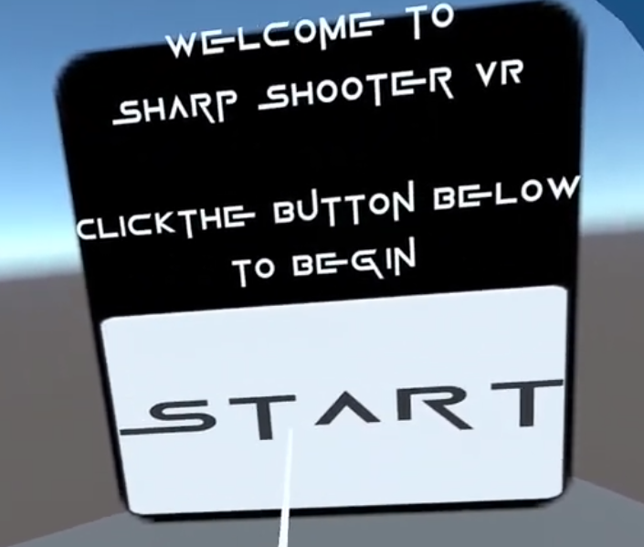
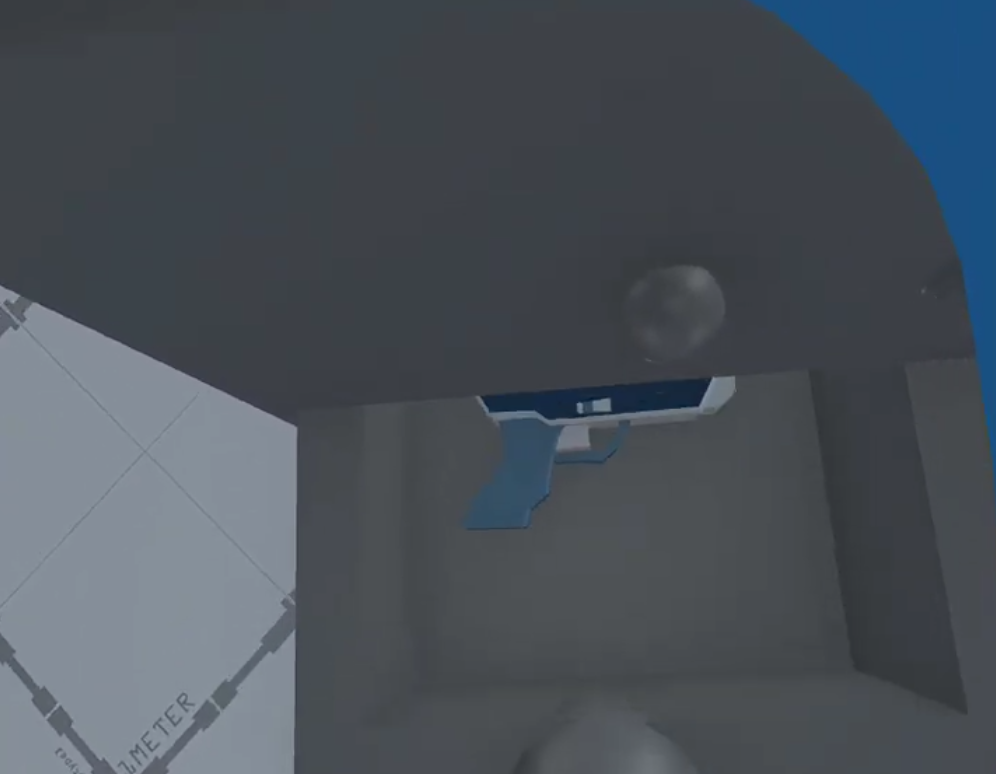
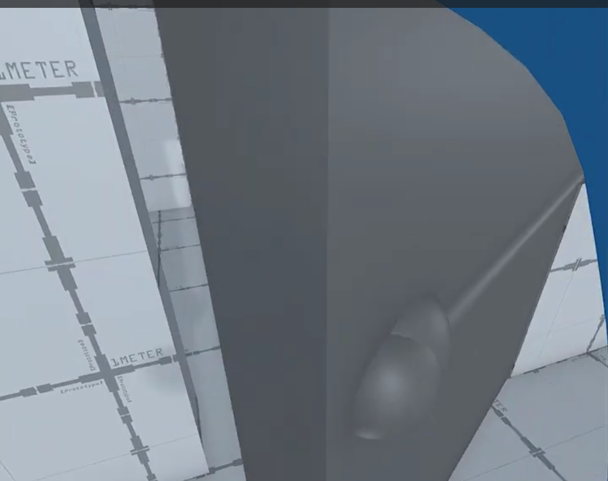
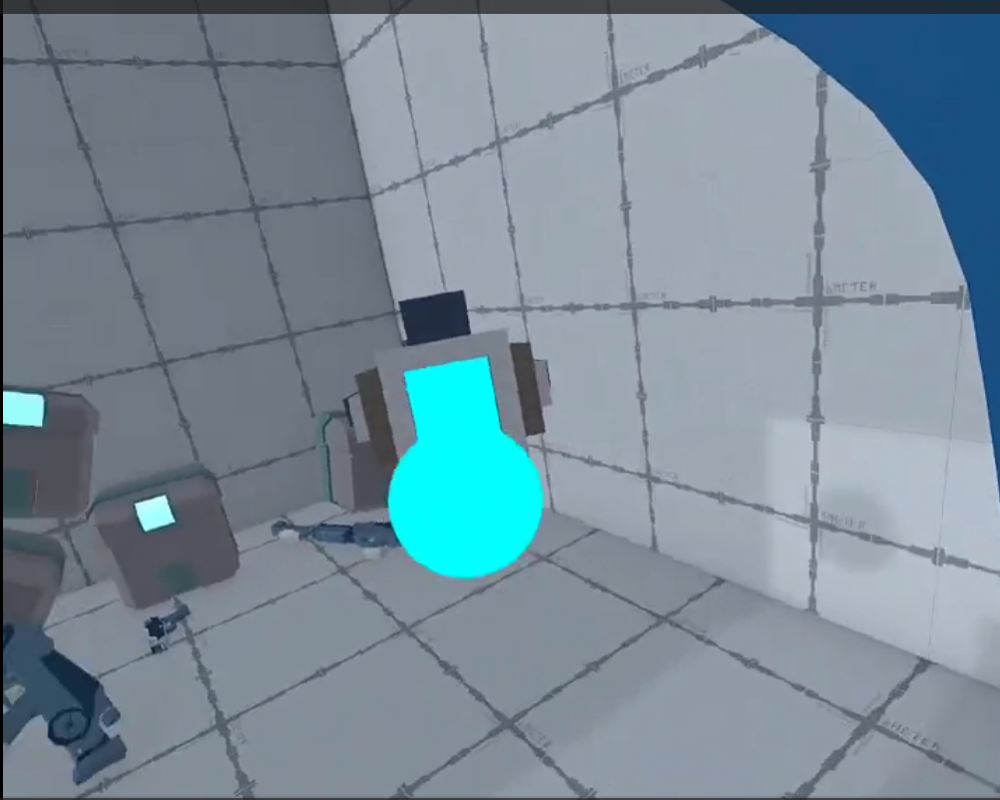
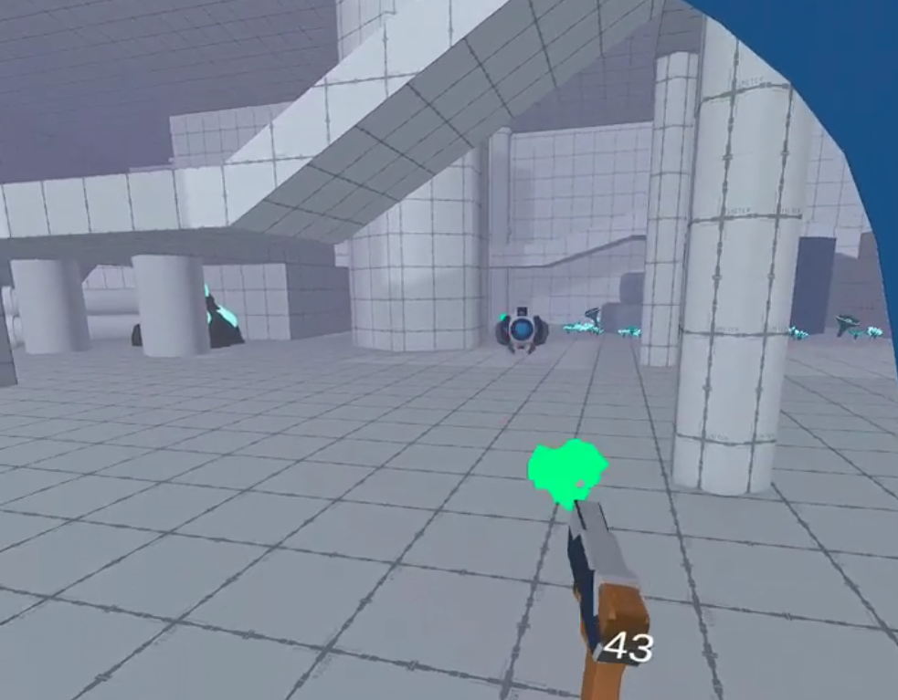
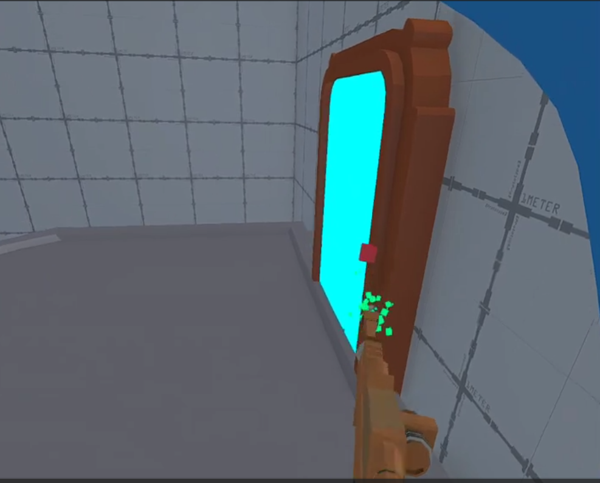
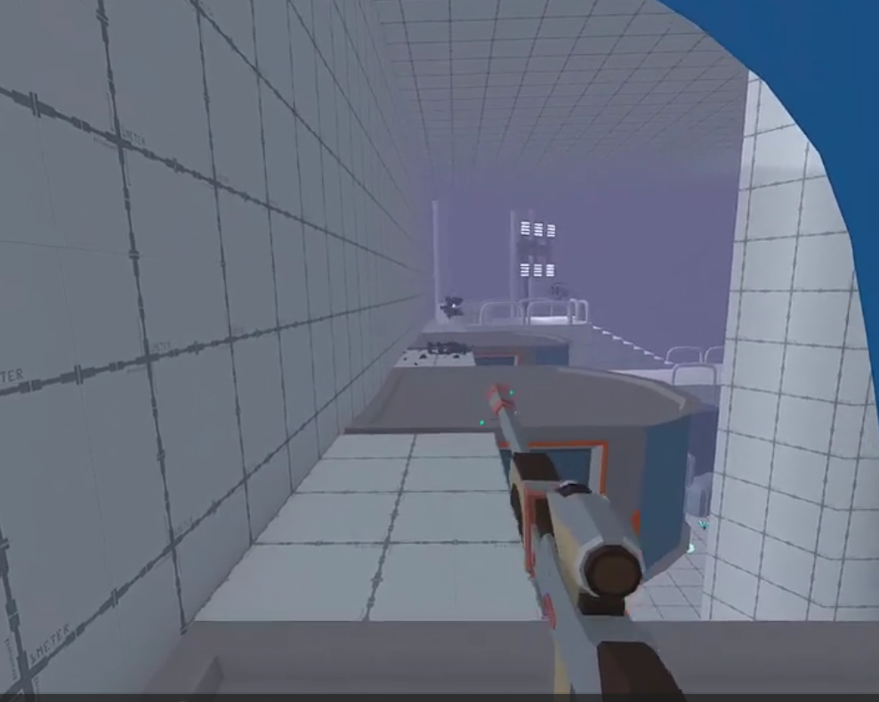

Previous Page
SharpShooter VR
SharpShooter is the final video game created in the GameDev.tv course for Unity 3D. The video game is a bullet hell first-person shooter where your
objective is to destroy all the enemies before becoming overwhelmed by enemies or running out of bullets. The video game is a perfect template to
experiment with virtual reality (VR) concepts, immersing the player into the world with vr. Below are the modifications that we will attempt to complete
in SharpShooter VR:
- Full transition from first-person shooter to a virtual reality video game
- Add in VR necessities (XR Interaction Toolkit, Meta XR Developmental Tools, etc.)
- Transition weapon shooting from a stationary weapon into a weapon that tracks the player’s hand movement
- Introduction to locomotion systems
- Simple joystick movement
- Grab controls
- Teleportation areas
- Modify world with interactable mechanics. This includes adding interactable mechanics that was covered in CITA 314 and new interactive mechanics.
- Interactive hinges for doors, drawers, etc.
- Grab interactions with objects like ammunation clips, ladders, and simple props.
- UI controls for menu swapping, scene loading, and weapon transitions
- Other interactable mechanics we deem fit for SharpShooter VR
- Introduce haptic feedback & adaptive music/SFX.
- Update/Balance the base SharpShooter video game for an enjoyable experience.
- Update how enemy spawning and attacking works in VR to make the experience intuitive and fair
- Introduce new means of gathering ammunition for the game to introduce new levels of immersion
- Add new content for player engagement
- New enemies to fight
- New weapons to handle
- Additional gameplay mechanics
Implementing VR concepts into SharpShooter VR proved challenging at first. To start, setting up the VR fundamentals was difficult. Since VR technology
is still in its infancy phase, there is little developmental support for creating and designing VR games in Unity. The setup process highlights this,
as the package installation process requires multiple packages to be installed, correct build settings to be applied, and troubleshooting unchanged
script issues.
After Setting up the fundamentals, the rest of the VR development went smoothly with minimal issues. Below are some highlights of the SharpShooter VR game:
Introduction screen
Below is the starting screen for SharpShooter VR. After clicking the start button, you are introduced to the game.

Interactable objects
Below are some of the interactable objects in the game. The first image is of a drawer that can be opened. Inside, you can grab ammo and your first weapon.
The second image is of the player grabbing and opening a door. On the other side of the door is a bittersweet surprise with a turret and a stockpile
of weapons and ammo waiting for you.



Weapons
There are three weapons in SharpShooter VR: a pistol, machine gun, and a rifle, each with its own benefits and tradeoffs. The pistol shoots relatively fast,
has high ammo count, but deals little damage. The machine gun fires really fast, but is unweildly at a distance. The rifle has high damage, stable accuracy,
but a low fire rate and little starting ammo.



That concludes the content in SharpShooter VR. Below, you can find a video demonstration of how you may play the game:
SharpShooter VR Video